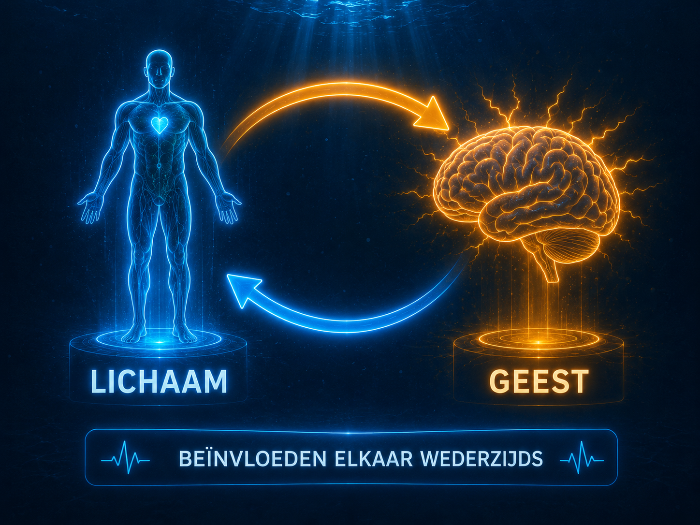

NLP Basisframes
NLP Basisframes
Eén van de fundamenten van NLP zijn de NLP Basisframes. Deze basisframes bestaan uit vier fundamentele denkwijzen (ways of thinking) die invloed hebben op hoe je situaties interpreteert, keuzes maakt en verantwoordelijkheid neemt voor je eigen gedrag.
De NLP Basisframes bestaan uit vier basisgedachten:
1. Oorzaak – Gevolg
Aan welke kant sta jij? Sta je aan de oorzaakkant en neem je verantwoordelijkheid voor je eigen keuzes en gedrag? Zoek je actief naar mogelijkheden en heb je de regie over wat je doet?
Of sta je aan de gevolgkant, waarbij de oorzaak van situaties vooral buiten jezelf wordt gelegd? Je wacht af, bent afhankelijk van omstandigheden of van anderen en ervaart minder invloed op de uitkomst.
Reflectievraag:
Zit jij achter het stuur van je (levens)bus, of zit je achterin als passagier?
2. Perceptie is Projectie
Je neemt de wereld niet objectief waar. Iedereen kijkt naar de werkelijkheid door zijn eigen "bril", gevormd door ervaringen, overtuigingen, waarden en herinneringen.
Je brein filtert, vervormt en vult informatie aan op basis van eerdere ervaringen. Daardoor reageer je niet op de werkelijkheid zoals die daadwerkelijk is, maar op de werkelijkheid zoals jij die onbewust hebt geconstrueerd.
Vervolgens projecteer je deze persoonlijke interpretatie weer op anderen. Dat betekent dat twee mensen dezelfde situatie heel verschillend kunnen ervaren en er toch allebei van overtuigd zijn dat zij de werkelijkheid zien.
Reflectievraag:
Kijk je naar de werkelijkheid zoals die is, of zoals jij hebt geleerd haar te zien?
3. Lichaam en Geest beïnvloeden elkaar wederzijds
Je lichaam en geest staan voortdurend met elkaar in verbinding. Wat je denkt en voelt heeft direct invloed op je lichaam. Andersom beïnvloedt je lichaam ook hoe je denkt, voelt en de wereld ervaart.
Een krachtige, open lichaamshouding kan bijvoorbeeld zorgen voor meer zelfvertrouwen en energie, terwijl een gespannen of gesloten houding gevoelens van onzekerheid kan versterken. Op dezelfde manier kunnen positieve gedachten leiden tot ontspanning, terwijl negatieve gedachten juist spanning in het lichaam kunnen veroorzaken.
Door bewust zowel je gedachten als je fysiologie positief te beïnvloeden, vergroot je de kans op duurzame verandering. Verander je houding, ademhaling of focus, dan verandert vaak ook je beleving en uiteindelijk je gedrag.
Reflectievraag:
Welke kleine verandering in jouw houding, ademhaling of gedachten kun je vandaag maken om jezelf positief te beïnvloeden?

4. Het centrale zenuwstelsel kan geen ontkenning vasthouden
Je kunt iets pas niet denken wanneer je het eerst wél voor je ziet. Dat komt doordat je brein vooral werkt met beelden, geluiden en gevoelens, en niet met het woord 'niet'.
Wanneer je tegen jezelf zegt: "Denk niet aan een roze olifant.", verschijnt er vrijwel direct een beeld van een roze olifant. Pas daarna verwerkt je brein de ontkenning. Daarom hebben negatief geformuleerde boodschappen vaak minder effect dan positief geformuleerde instructies.
Formuleer daarom wat je wél wilt bereiken of doen. Zeg bijvoorbeeld: "Dit moet ik onthouden." in plaats van "Dit moet ik niet vergeten." Door je aandacht te richten op het gewenste gedrag, vergroot je de kans dat je brein zich daarop richt.
Reflectievraag:
Hoe kun jij jouw gedachten vandaag positiever formuleren? Benoem niet wat je wilt vermijden, maar juist wat je wél wilt doen.